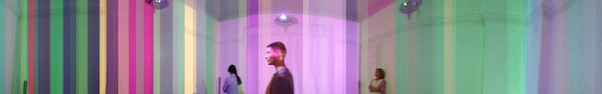
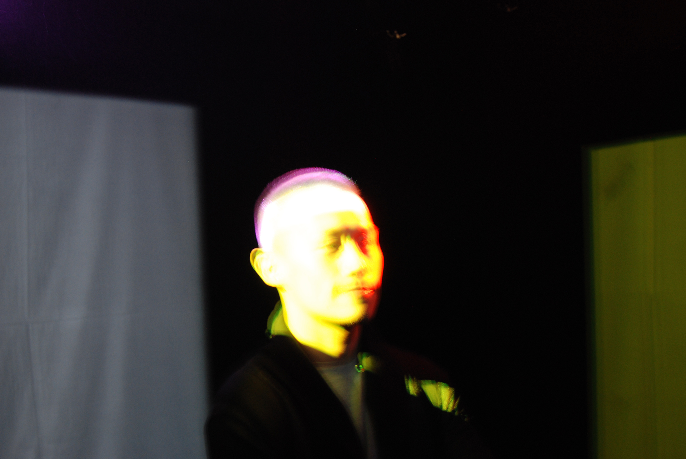

Audiovisual installation, multi-media. Four projectors, speakers, computer. 2016. Installation view at the 2016 edition of «Lange Nacht der Wissenschaften» at The Technical University in the German capital. Video courtesy of the author.
Lustgarten
«Lustgarten» is an audiovisual installation based on quantum vibrational molecular data measurement. Through its elements, it constitutes the place that is Tiergarten Berlin.
The piece utilizes a method known as Raman spectroscopy to obtain quantum vibratory states of molecules. It is a spectroscopic technique used to observe vibrational, rotational, and other low-frequency modes in a system. In the Raman measuring technique an object is exposed to a laser beam which produces a change in the light spectrum caused by the collision of laser and said object. This change is then assessed and a molecular spectrum is created.
Four objects (water from one of the ponds, a wooden piece, an acorn and a feather) were picked by the artist in the area of Tiergarten Berlin and measured with the help of the Institute of Physical Chemistry at the Technical University of Berlin, using the method of Raman spectroscopy. The data obtained through the molecular analysis inspired the creation of the musical score and visual elements of the installation.
Installation view «Lustgarten» at The Fridge, Sofia, 2017. Photo by N. Lenz.
This approach to music transforms the very fabric which constitutes our universe into an audiovisual composition. A practice which unravels an entirely foreign dimension by literally employing the essence of nature to generate an audiovisual piece. A poetic stance on sound and light creation, reminiscent of the forgotten art of alchemy.
Quantum mechanics as a principle in this work, is an endeavor to attain the metaphysical through a rational method, the output of which would provide undisputable result. It is an effort to bring to manifestation the essence of nature. An aspiration to transcend inherent perception and synthesize the ephemeral substance of mentality. An idealist ambition to weave the matters, both metaphysical and factual, into a singular state.
The installation consists of a black cube (4m side) with four beamers installed on each wall and a sound system. Each beamer projects a color on the opposite wall inside the box. The music being played for the duration of the installation consists of four instruments — a grand piano, a guitar synth, pan flute and a wind machine. Each of the four elements is responsible for an instrument — the water plays the piano, the feather plays the guitar synth, the acorn plays the pan flute and the piece of wood plays the wind machine. Every note being played has a different color; as the notes change so do the colors projected on each wall. Thus as the piano is being played the colors being projected on one of the walls change with every note. Every element plays an instrument and accordingly is visualized by a color being projected on one of the walls. The installation is an essential representation of the quantum vibrational molecular data measurement.
Installation view at the 2016 edition of «Lange Nacht der Wissenschaften» at The Technical University in the German capital. Photo courtesy of the author.